VS Code 中的数据科学教程
本教程演示如何使用 Visual Studio Code 和 Microsoft Python 扩展，结合常见的数据科学库来探索一个基本的数据科学场景。具体来说，你将使用泰坦尼克号的乘客数据，学习如何设置数据科学环境、导入和清理数据、创建一个用于预测泰坦尼克号生存情况的机器学习模型，并评估所生成模型的准确性。
先决条件
完成本教程需要安装以下软件。如果尚未安装，请务必安装。
- Visual Studio Code
- 来自 Visual Studio Marketplace 的 VS Code Python 扩展和 VS Code Jupyter 扩展。有关安装扩展的更多详细信息，请参阅扩展市场。这两个扩展均由 Microsoft 发布。
- Miniconda 与最新版 Python
注意：如果你已经安装了完整的 Anaconda 发行版，则无需安装 Miniconda。或者，如果你不希望使用 Anaconda 或 Miniconda，可以创建一个 Python 虚拟环境并使用 pip 安装本教程所需的包。如果选择这种方式，你需要安装以下包：pandas、jupyter、seaborn、scikit-learn、keras 和 tensorflow。
```sh
python -m pip install pandas jupyter seaborn scikit-learn keras tensorflow
```
设置数据科学环境
Visual Studio Code 和 Python 扩展为数据科学场景提供了出色的编辑器。凭借对 Jupyter notebook 的原生支持以及与 Anaconda 的结合，你可以轻松上手。在本节中，你将为本教程创建工作区，创建一个包含所需数据科学模块的 Anaconda 环境，并创建一个用于构建机器学习模型的 Jupyter notebook。
- 首先，为本数据科学教程创建一个 Anaconda 环境。打开 Anaconda 命令提示符，运行
conda create -n myenv python=3.10 pandas jupyter seaborn scikit-learn keras tensorflow来创建一个名为 myenv 的环境。有关创建和管理 Anaconda 环境的更多信息，请参阅 Anaconda 文档。 - 接下来，在一个方便的位置创建一个文件夹，作为本教程的 VS Code 工作区，将其命名为
hello_ds。 - 通过运行 VS Code 并使用 文件 > 打开文件夹 命令在 VS Code 中打开项目文件夹。由于文件夹是你自己创建的，你可以安全地信任并打开该文件夹。
- VS Code 启动后，创建将用于本教程的 Jupyter notebook。打开命令面板 (
kb(workbench.action.showCommands)) 并选择 Create: New Jupyter Notebook。
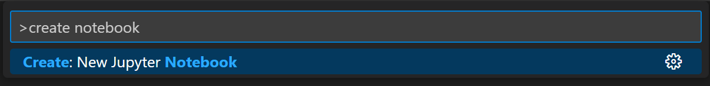
注意：或者，你也可以从 VS Code 文件资源管理器中使用新建文件图标来创建一个名为 hello.ipynb 的 Notebook 文件。
- 使用 文件 > 另存为... 将文件保存为
hello.ipynb。 - 文件创建后，你应该能在 notebook 编辑器中看到打开的 Jupyter notebook。有关原生 Jupyter notebook 支持的更多信息，你可以阅读 Jupyter Notebooks 主题。
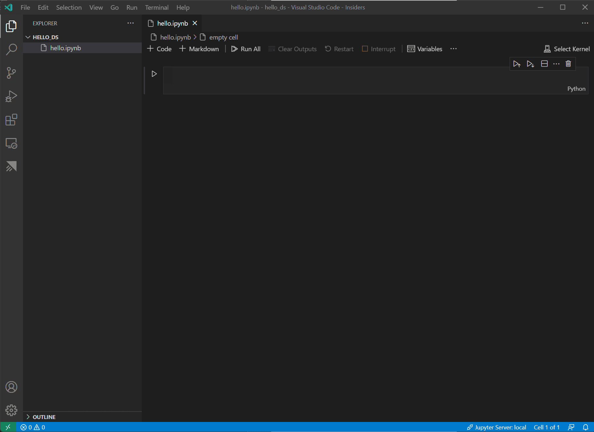
- 现在选择 notebook 右上角的 选择内核。
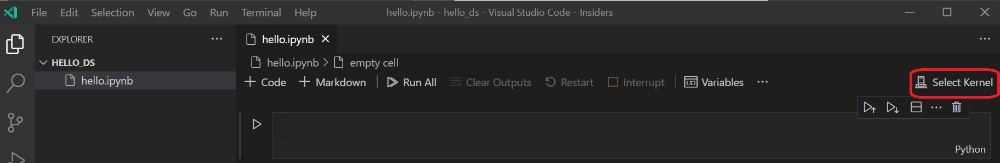
- 选择你在上面创建的 Python 环境来运行内核。
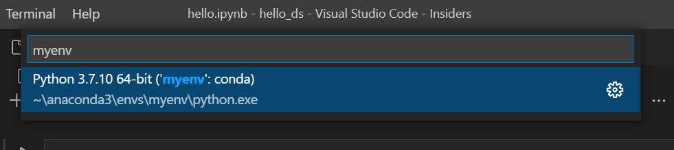
- 若要通过 VS Code 的集成终端管理你的环境，请使用 (
kb(workbench.action.terminal.toggleTerminal)) 打开终端。如果你的环境尚未激活，你可以像在终端中一样进行激活 (conda activate myenv)。准备数据
本教程使用的是 OpenML.org 上提供的泰坦尼克号数据集，该数据集来自范德堡大学生物统计系（https://hbiostat.org/data）。泰坦尼克号数据提供了关于泰坦尼克号上乘客的生存信息以及乘客的特征，如年龄和舱位等级。使用这些数据，本教程将建立一个模型来预测某位乘客是否会在泰坦尼克号沉没事件中幸存。本节将展示如何在 Jupyter notebook 中加载和操作数据。
- 首先，从 hbiostat.org 下载泰坦尼克号数据为一个 CSV 文件（下载链接在右上角），文件名为
titanic3.csv，并将其保存到你上一节中创建的hello_ds文件夹中。 - 如果尚未在 VS Code 中打开文件，请通过 文件 > 打开文件夹 打开
hello_ds文件夹和 Jupyter notebook（hello.ipynb）。 - 在你的 Jupyter notebook 中，首先导入 pandas 和 numpy 这两个常用的数据处理库，并将泰坦尼克号数据加载到 pandas DataFrame 中。为此，请将下面的代码复制到 notebook 的第一个单元格中。有关在 VS Code 中使用 Jupyter notebook 的更多指导，请参阅使用 Jupyter Notebooks 文档。
import pandas as pd import numpy as np data = pd.read_csv('titanic3.csv') - 现在，使用运行单元格图标或
kbstyle(Shift+Enter)快捷键运行该单元格。
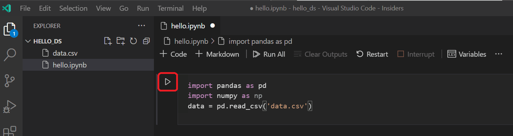
- 单元格运行完成后，你可以使用变量资源管理器和数据查看器来查看已加载的数据。首先选择 notebook 上方工具栏中的 变量 图标。
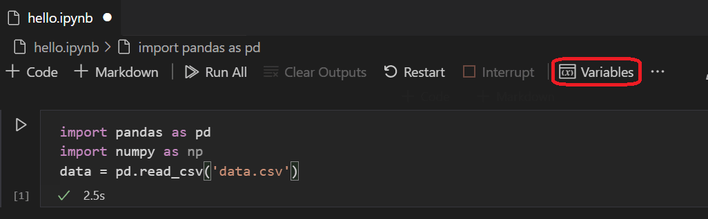
- VS Code 底部将打开一个 JUPYTER: VARIABLES 窗格。它包含了你当前运行内核中已定义的变量列表。
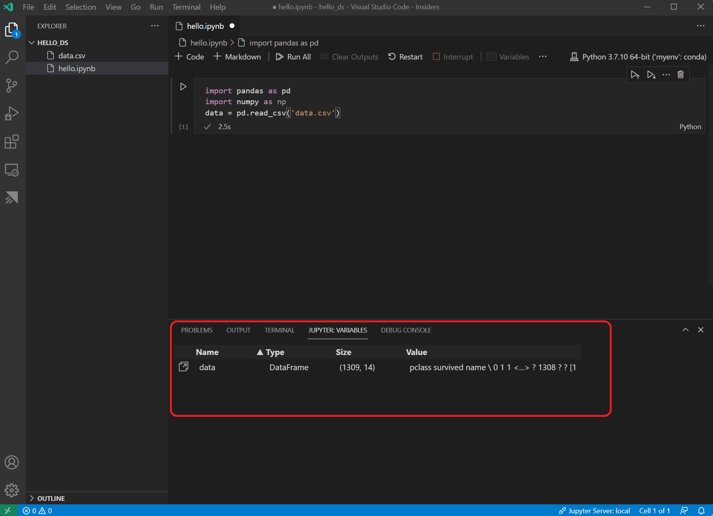
- 若要查看之前加载的 Pandas DataFrame 中的数据，请选择
data变量左侧的数据查看器图标。
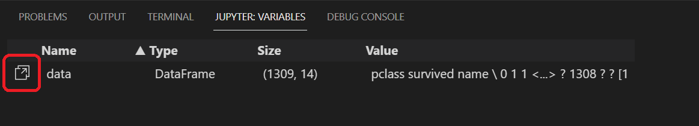
- 使用数据查看器可以查看、排序和筛选数据行。查看数据后，绘制数据的某些方面的图表可以帮助你可视化不同变量之间的关系。
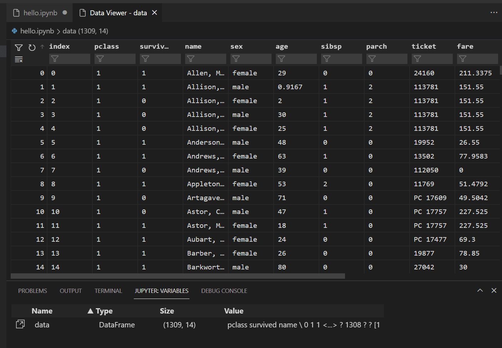
或者，你也可以使用其他扩展（如 Data Wrangler）提供的数据查看体验。Data Wrangler 扩展提供了丰富的用户界面来展示有关你数据的见解，并帮助你执行数据概要分析、质量检查、转换等操作。请在我们的文档中了解更多关于 Data Wrangler 扩展 的信息。
- 在绘制数据图表之前，你需要确保数据没有任何问题。如果你查看泰坦尼克号 CSV 文件，你会注意到的第一件事是问号（"?"）被用来标识数据不可用的单元格。
虽然 Pandas 可以将此值读入 DataFrame，但对于 age 这样的列，其结果将是其数据类型会被设置为 object 而不是数值数据类型，这会给绘图带来问题。
可以通过将问号替换为 pandas 能够理解的缺失值来纠正此问题。在 notebook 的下一个单元格中添加以下代码，将 age 和 fare 列中的问号替换为 numpy NaN 值。请注意，在替换值之后，我们还需要更新列的数据类型。
提示：若要添加新单元格，你可以使用现有单元格左下角的插入单元格图标。或者，你也可以使用kbstyle(Esc)进入命令模式，然后按kbstyle(B)键。
data.replace('?', np.nan, inplace= True)
data = data.astype({"age": np.float64, "fare": np.float64})注意：如果你需要查看某列所使用的数据类型，可以使用 DataFrame dtypes 属性。
- 现在数据已经就绪，你可以使用 seaborn 和 matplotlib 来查看数据集中某些列与生存率的关系。在 notebook 的下一个单元格中添加以下代码并运行，以查看生成的图表。
import seaborn as sns import matplotlib.pyplot as plt fig, axs = plt.subplots(ncols=5, figsize=(30,5)) sns.violinplot(x="survived", y="age", hue="sex", data=data, ax=axs[0]) sns.pointplot(x="sibsp", y="survived", hue="sex", data=data, ax=axs[1]) sns.pointplot(x="parch", y="survived", hue="sex", data=data, ax=axs[2]) sns.pointplot(x="pclass", y="survived", hue="sex", data=data, ax=axs[3]) sns.violinplot(x="survived", y="fare", hue="sex", data=data, ax=axs[4])
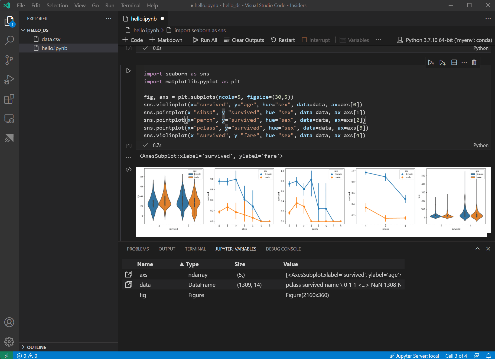
提示：若要快速复制你的图表，你可以将鼠标悬停在图表的右上角，点击出现的 复制到剪贴板 按钮。你还可以通过点击 展开图像 按钮来更好地查看图表的详细信息。
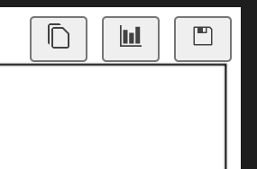
- 这些图表有助于你了解生存率与数据输入变量之间的一些关系，但你也可以使用 pandas 来计算相关性。为此，所有使用的变量都需要是数值型的以便进行相关性计算，而目前 gender（性别）存储为字符串。若要将这些字符串值转换为整数，请添加并运行以下代码。
data.replace({'male': 1, 'female': 0}, inplace=True) - 现在，你可以分析所有输入变量之间的相关性，以确定哪些特征将是机器学习模型的最佳输入。值越接近 1，表示该值与结果之间的相关性越高。使用以下代码来关联所有变量与生存率之间的关系。
data.corr(numeric_only=True).abs()[["survived"]]
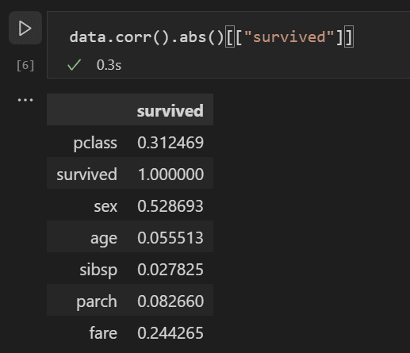
- 查看相关性结果，你会注意到一些变量（如 gender）与生存率有相当高的相关性，而其他变量（如 relatives，即 sibsp = 兄弟姐妹或配偶，parch = 父母或子女）似乎相关性较低。
让我们假设 sibsp 和 parch 在影响生存率方面是相关的，并将它们合并到一个名为 "relatives" 的新列中，看看它们的组合是否与生存率有更高的相关性。为此，你将检查给定乘客的 sibsp 和 parch 数量是否大于 0，如果是，那么你可以说他们船上有亲属。
使用以下代码在数据集中创建一个名为 relatives 的新变量和列，并再次检查相关性。
data['relatives'] = data.apply (lambda row: int((row['sibsp'] + row['parch']) > 0), axis=1)
data.corr(numeric_only=True).abs()[["survived"]]
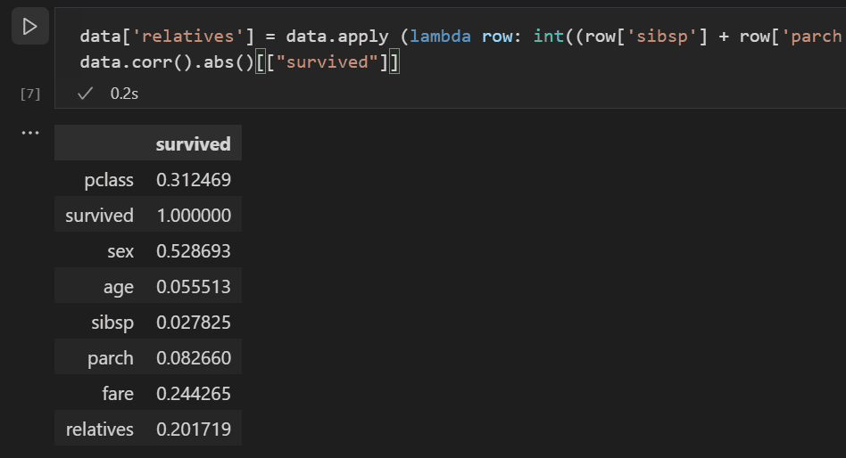
- 你会注意到，事实上，从一个人是否有亲属而非有多少亲属的角度来看，与生存率的相关性更高。掌握了这一信息后，你现在可以从数据集中删除低价值的 sibsp 和 parch 列，以及任何包含 NaN 值的行，从而得到一个可以用于训练模型的数据集。
data = data[['sex', 'pclass','age','relatives','fare','survived']].dropna()注意：虽然 age（年龄）的直接相关性较低，但仍予以保留，因为它似乎合理地可能与其他输入结合时仍具有相关性。
训练和评估模型
数据集准备就绪后，你现在可以开始创建模型了。在本节中，你将使用 scikit-learn 库（因为它提供了一些有用的辅助函数）来对数据集进行预处理，训练一个分类模型以确定泰坦尼克号上的生存情况，然后使用测试数据对该模型进行评估，以确定其准确性。
- 训练模型的一个常见的第一步是将数据集分为训练数据和验证数据。这样你可以使用一部分数据来训练模型，另一部分数据来测试模型。如果你使用所有数据来训练模型，你将无法估计模型在面对尚未见过的数据时的实际表现。scikit-learn 库的一个优势是它提供了一个专门用于将数据集拆分为训练数据和测试数据的方法。
在 notebook 中添加并运行一个包含以下代码的单元格来拆分数据。
from sklearn.model_selection import train_test_split
x_train, x_test, y_train, y_test = train_test_split(data[['sex','pclass','age','relatives','fare']], data.survived, test_size=0.2, random_state=0)- 接下来，你需要对输入进行归一化，使所有特征得到平等对待。例如，在数据集中，年龄的取值范围大约为 0-100，而性别只有 1 或 0。通过归一化所有变量，你可以确保所有值的范围都相同。在一个新的代码单元格中使用以下代码来缩放输入值。
from sklearn.preprocessing import StandardScaler sc = StandardScaler() X_train = sc.fit_transform(x_train) X_test = sc.transform(x_test) - 你可以选择许多不同的机器学习算法来对数据建模。scikit-learn 库也提供了对其中许多算法的支持，以及一个图表来帮助选择适合你场景的算法。现在，使用朴素贝叶斯算法，这是一种常用的分类问题算法。添加一个包含以下代码的单元格来创建和训练该算法。
from sklearn.naive_bayes import GaussianNB model = GaussianNB() model.fit(X_train, y_train) - 有了训练好的模型，你现在可以将其应用于训练时保留的测试数据集。添加并运行以下代码来预测测试数据的结果并计算模型的准确性。
from sklearn import metrics predict_test = model.predict(X_test) print(metrics.accuracy_score(y_test, predict_test))
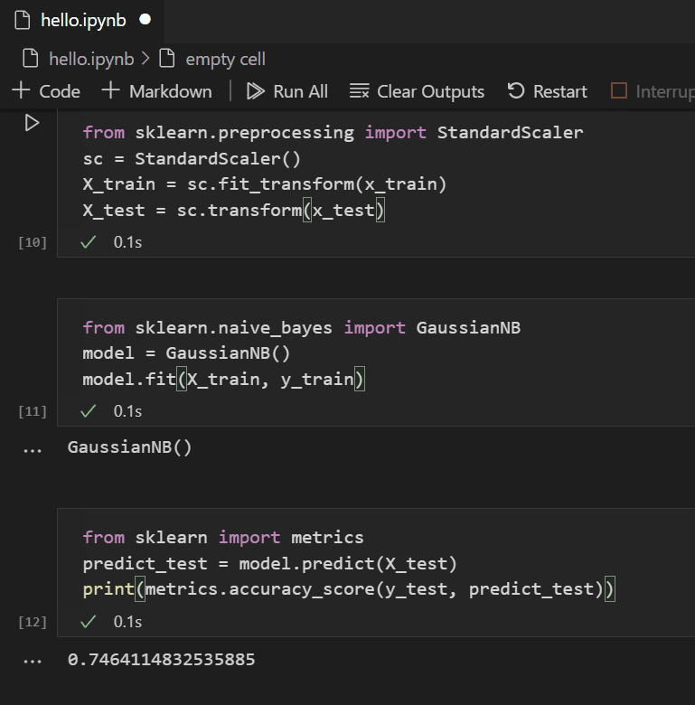
查看测试数据的结果，你会看到训练好的算法在估算生存率方面有约 75% 的成功率。
（可选）使用神经网络
神经网络是一种使用权重和激活函数、模拟人类神经元某些方面的模型，它根据提供的输入来确定结果。与你之前了解的机器学习算法不同，神经网络是一种深度学习形式，你无需提前知道适合你问题集的理想算法。它可以用于许多不同的场景，分类就是其中之一。在本节中，你将使用带有 TensorFlow 的 Keras 库来构建神经网络，并探索它如何处理泰坦尼克号数据集。
- 第一步是导入所需的库并创建模型。在这种情况下，你将使用顺序神经网络，这是一种分层神经网络，其中有多个层按顺序相互输入。
from keras.models import Sequential from keras.layers import Dense model = Sequential() - 定义模型后，下一步是添加神经网络的层。现在，让我们保持简单，只使用三层。添加以下代码来创建神经网络的层。
model.add(Dense(5, kernel_initializer = 'uniform', activation = 'relu', input_dim = 5)) model.add(Dense(5, kernel_initializer = 'uniform', activation = 'relu')) model.add(Dense(1, kernel_initializer = 'uniform', activation = 'sigmoid'))- 第一层将设置为维度为 5，因为你拥有五个输入：sex、pclass、age、relatives 和 fare。
- 最后一层必须输出 1，因为你希望得到一个一维输出，指示乘客是否会幸存。
- 为了简单起见，中间层保持为 5，尽管该值可以不同。
修正线性单元（relu）激活函数被用作前两层的良好通用激活函数，而 sigmoid 激活函数是最后一层所必需的，因为你想要的输出（乘客是否幸存）需要缩放到 0-1 的范围内（乘客存活的概率）。
你还可以使用以下代码行查看你构建的模型的摘要：
model.summary()
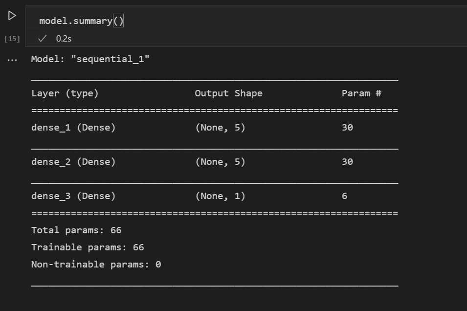
- 模型创建后，需要对其进行编译。作为编译的一部分，你需要定义将使用哪种优化器、如何计算损失以及应优化哪个指标。添加以下代码来构建和训练模型。你会注意到，训练后，准确率约为 61%。
注意：此步骤可能需要几秒到几分钟的时间，具体取决于你的机器。
model.compile(optimizer="adam", loss='binary_crossentropy', metrics=['accuracy']) model.fit(X_train, y_train, batch_size=32, epochs=50)
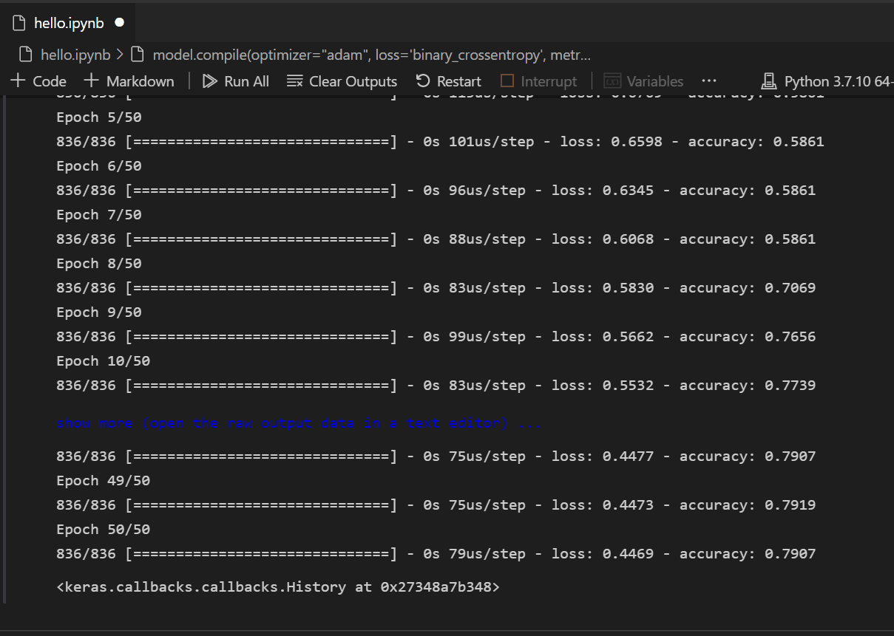
- 现在模型已构建并训练完成，我们可以看看它在测试数据上的表现如何。
y_pred = np.rint(model.predict(X_test).flatten()) print(metrics.accuracy_score(y_test, y_pred))
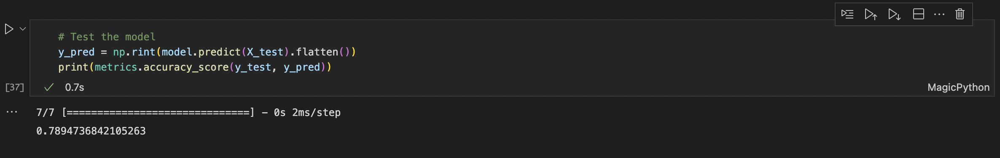
与训练类似，你会注意到现在预测乘客生存率的准确率达到了 79%。使用这个简单的神经网络，其结果优于之前尝试的朴素贝叶斯分类器的 75% 准确率。
后续步骤
现在你已经熟悉了在 Visual Studio Code 中进行机器学习的基础知识，以下是一些你可以查看的其他 Microsoft 资源和教程。
- 数据科学配置文件模板 - 使用一组精选的扩展、设置和代码片段创建一个新的配置文件。
- 了解更多关于在 Visual Studio Code 中使用 Jupyter Notebooks（视频）。
- 开始使用 Azure Machine Learning for VS Code 来利用 Azure 的强大功能部署和优化你的模型。
- 在 Azure 开放数据集上找到更多可供探索的数据。